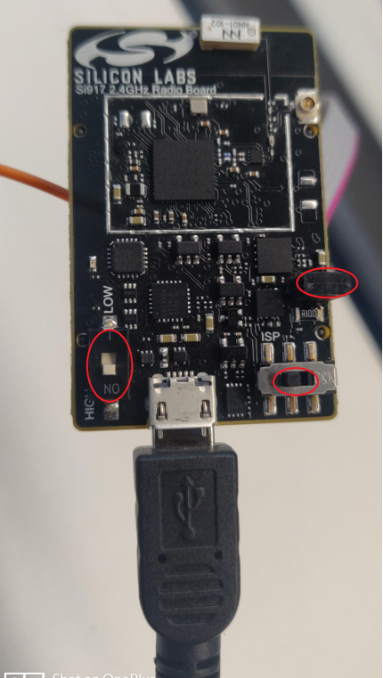
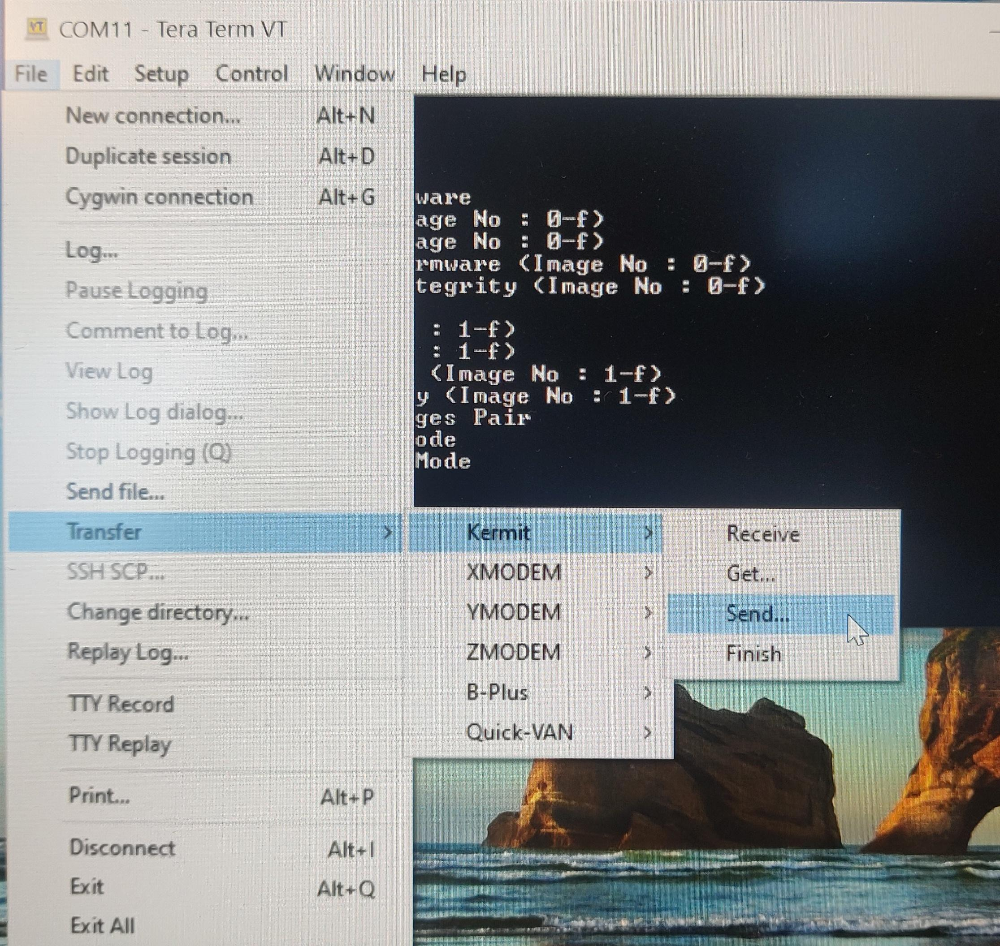

Updating SiWx917 SoC Firmware using Tera Term
Please note that the method of updating the SiWx917 SoC firmware listed below is considered a legacy mode of operation. You may also update the SiWx917 SoC firmware using Simplicity Commander. For instructions on how to do this please consider Running Demo on the SiWx917SoC
Steps to update the firmware on SiWx917 SoC radio board
Connect power cable to radio board.
Jumper should be connected.
Switches: Left switch should be ON/high, and the right switch should be on the ISP side.

Open Tera term in windows PC and check for connected USB devices.
Select JLink CDC UART Port and change baud rate to 921600 to increase speed.
From terminal type “CTRL + |” for boot message “U”, then type “U” for boot menu, type “B”, “0” to burn wireless / “4”, “1” to burn MCU firmware, and give (Ctrl + \ + c) to exit from kermit.

From terminal, go to Transfer->Kermit→Send and select *.rps file to load.

Once the image transfer is complete, type “c” to continue to check the upgrade sequence, once the upgrade is successful , Enter “1” for the Enter next command , once text “Loading…” appears type (Ctrl + \ + c) to exit from Kermit and “q” to quit and return to the terminal.
Reset both the buttons to Off/Low state.
Flash and run the application - Running the Matter Demo on SiWx917 SoC.